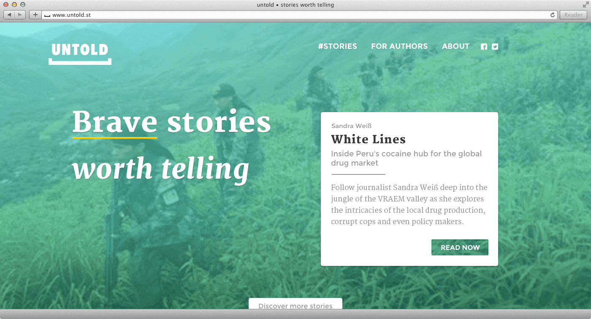
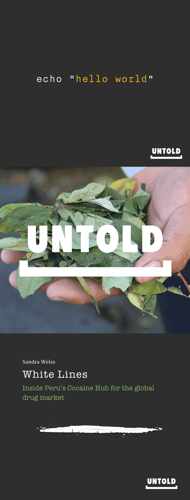
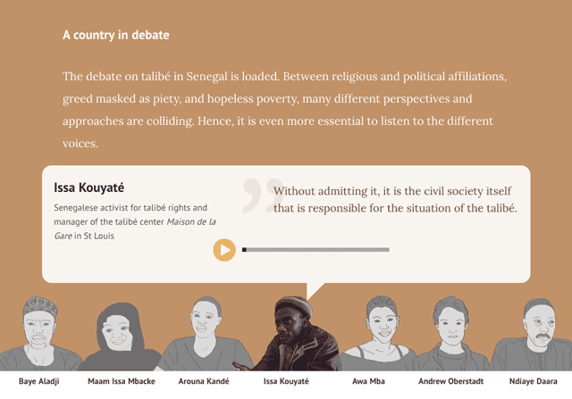

That’s long enough. Now scroll and read. Or close it and move on. :=)
Untold is my former storytelling playground and payment experiment in digital journalism. We set out to prove that readers would pay for quality stories when given a straightforward payment method without any lock-ins or subscriptions. Something, the publishing industry is still terrified of.
The reportages were trying to immerse the reader in the stories, play with new ways to present content while combining interactive modules with good storytelling.
On the plus side, we received praise for our designs and for being bold. And we worked with some talented journalists and learned why the industry is doomed. After trying a few different business models (apart from selling ads) we recognized that as a content creator we could not scale. But without being involved in the production the quality would suffer. Unfortunately, this story does not have a happy ending.
Read on. You get some eye candy, I promise.

Homepage with a story teaser
It started in 2014 as a quest for new income sources for journalists. Initially, we created a crowd-funding platform for stories. Acting as an intermediary and co-creating the stories at the same time, the model was flawed. It took too long to create the ambitious reportages (on top of the long funding periods). So we shifted brands and turned it into a web magazine for interactive reportages. So at least we would not announce a story before it was finished, like with the crowd-funding model.


A couple of Facebook post designs
Storytelling formats
Instead of just illustrating around our stories we tried to present them in a way that would not compromise the content but let the user engage with it.
Opinion bar
In this example it was hard to give a proper stage to the context of the story. Many different protagonists, each with an opinion, a name, a face. So we created a stage, drew their faces, recorded their voices and added a little quote.


Example of an interactive module called ’opinion bar’
Interactive interview
For White Lines we re-imagined how interviews are presented. Instead of long, boring sequences of question and answer we put the questions into four groups, gave them a sub-navigation and only displayed one answer at a time. The reader could click through them one by one, switch to another topic group, or easily skip the entire paragraph.
Q&A module in White Lines
Payment experiments
The publishing industry is in a self-inflicted pickle. They ignored the internet for so long that when they realized there is not enough money to be made from advertisement, readers had already gotten used to free content everywhere. As corporate behemoths they lack the courage to run experiments and see most of them fail.
That’s why we when we started thinking about how readers could pay, we let the gate open and waited who would come in. This means we created a viral paywall which accepted a Facebook share as payment. Or you could read first and pay later with Paypal. On the data side, we could run experiments with different payment flows, value propositions and presentations.
Here is an example of the logo play on the paywall which gives a glimpse of what the story will be about.
Viral paywall for As The Children Wait